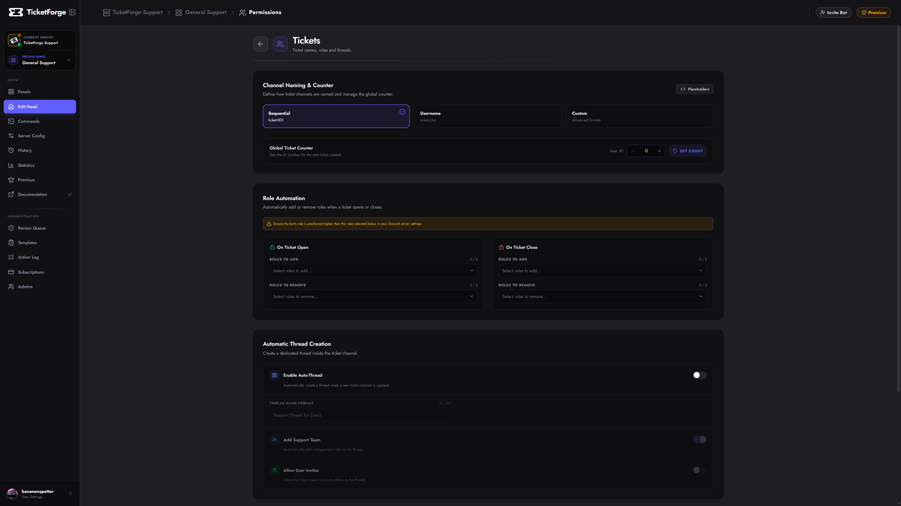

Ticket Settings
Control the fundamental behavior of your tickets: names, permissions, and structure.

Channel Naming
You can define a naming pattern for your tickets.
- Sequential:
ticket-001,ticket-002 - Username:
ticket-john,ticket-sarah - Custom:
help-{user}-{count}(Supports variables).
Automatic Thread Creation
Instead of creating a text channel, you can configure the bot to create a Private Thread inside a specific parent channel.
- Go to Panel Editor > Threads.
- Enable Tickets as Threads.
- Parent Channel: Select the text channel where threads will spawn.
Thread Options
- Add Support Team: Automatically adds all configured support roles to the thread so they can view it.
- Allow User Invites: Allows the ticket creator to invite other users to the thread via
@mention. - Naming: Uses the same variables as standard channels (e.g.,
ticket-{count}).
Permission Note
When using Threads, the "Category" settings are disabled because threads must live inside their parent channel.
Role Permissions
TicketForge automatically manages channel permissions so you don't have to manually set overrides.
Opened Roles
Select roles that should be Added or Removed from the user when a ticket is Created. * Use Case: Give the user a "Support Active" role so they show up higher in the member list.
Closed Roles
Select roles to modify when a ticket is Closed (Archived). * Use Case: Remove the user's ability to send messages, effectively making the channel "Read Only" for them.